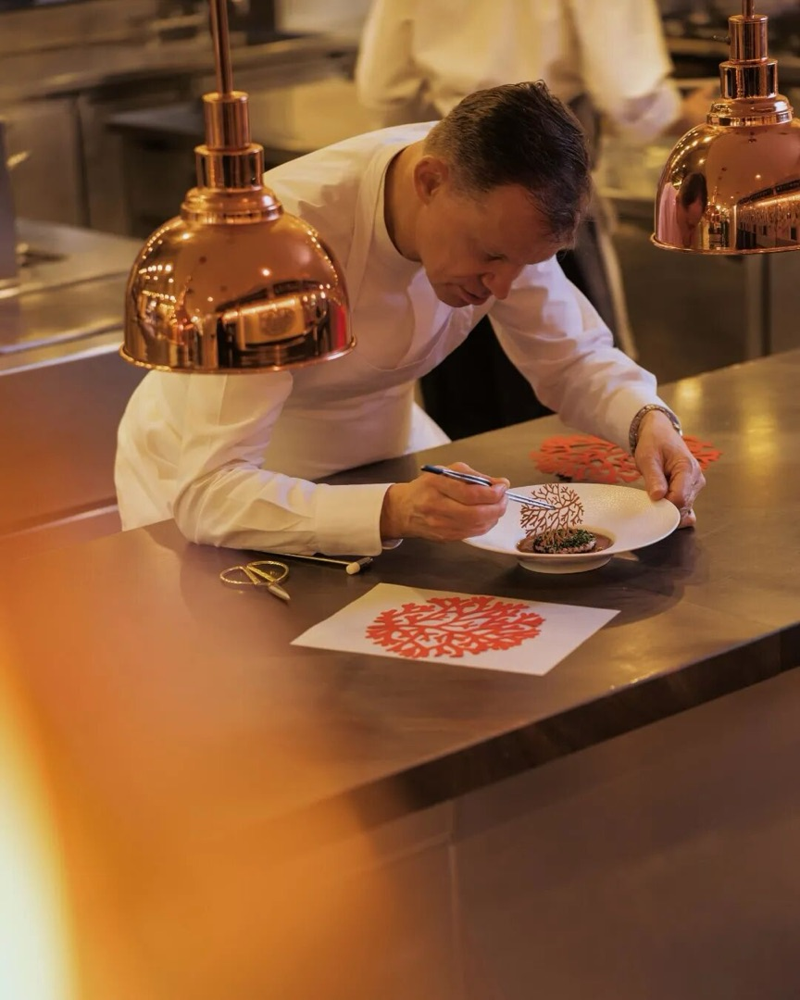
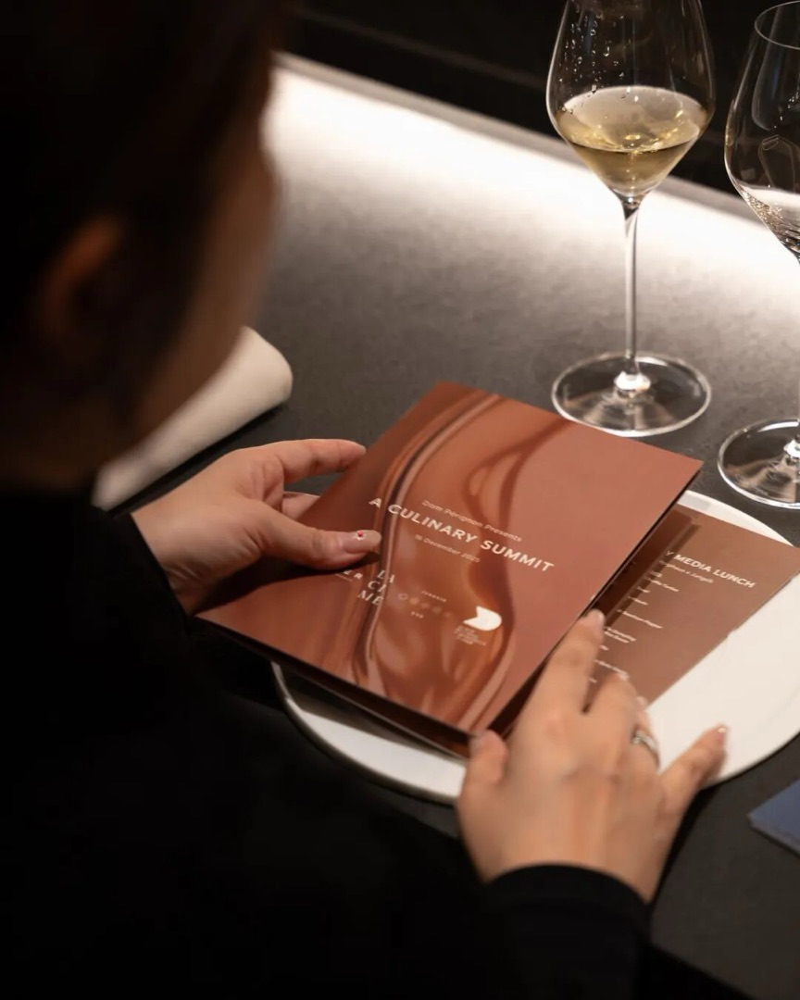
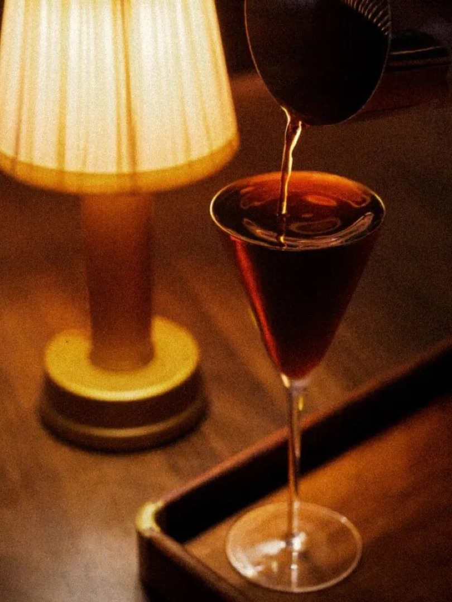
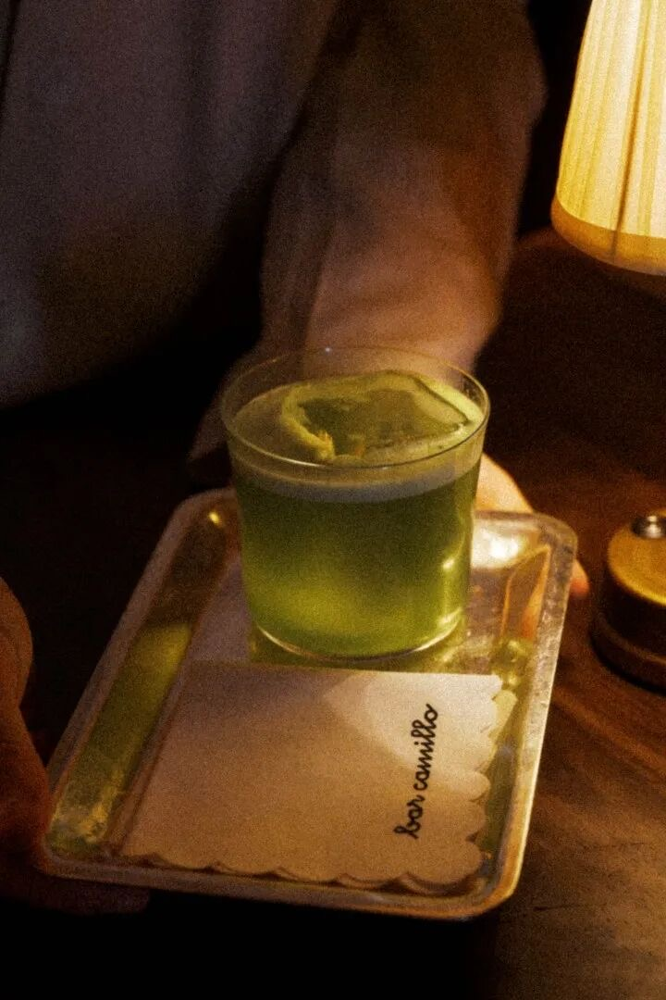
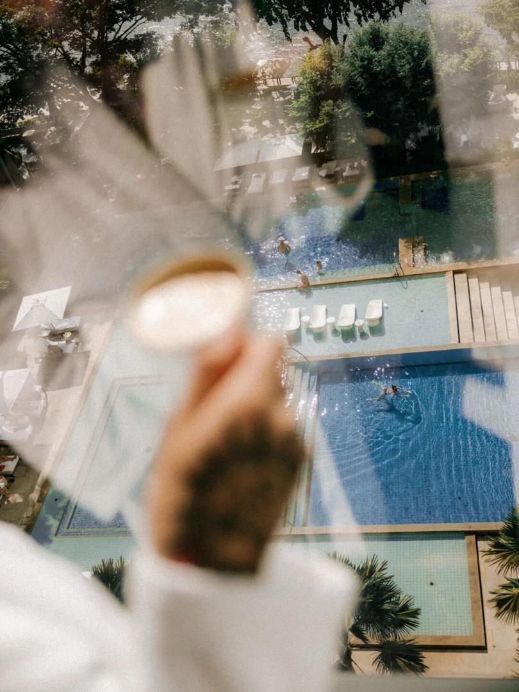
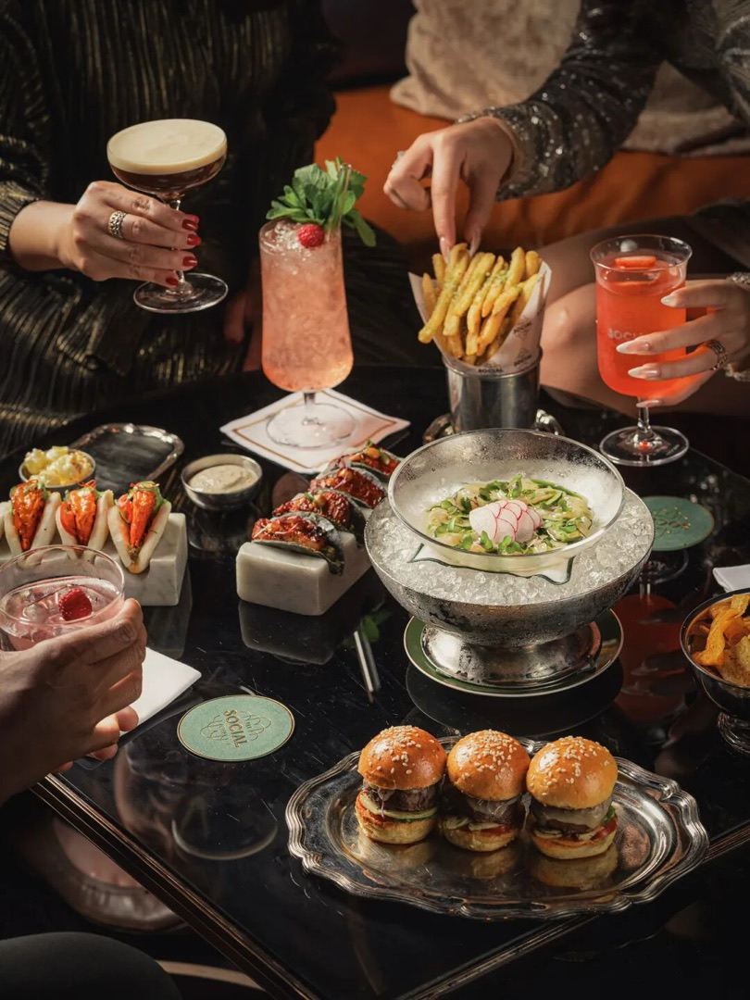

晚上十一点，大堂安静下来，电梯把最后一批住客送回楼上。往里走，穿过走廊，酒吧还亮着，吧台前坐满了不住店的人，在等今晚最后一轮 Negroni。
这不是某一家酒店的夜晚，是 2026 年整个行业的夜晚。豪华酒店现在最忙的部门，已经不是客房，是吧台。房晚看旅游周期吃饭，而一个让人坐得下来的空间，周中也满座。
过去一个月，三家顶级酒店集团做了三件事，方向出奇一致。我们把它拆开讲。
01｜文华东方：先淘汰了一个词
11 月 2 日，文华东方官宣：沿用几十年的 F&B（餐饮部），升级为 Restaurants, Bars & Experiences，缩写 RB&E。
改的是名字，换的是脑子。官方的标准很直白：每个场子要有自己的身份、自己的客人、一个"值得再来的理由"。餐厅酒吧过去是服务住客的配套，现在，每一个都是能独立招客的城市目的地。


动作跟得很紧。香港文华东方翻新后一口气端出 14 个餐饮空间；马略卡新店把 Leña 和松久信幸的 Matsuhisa 装进同一个度假村；集团挂着 33 颗米其林星，还专设了集团级的 RB&E 总监职位。
官方引用里有一句："The most precious luxury is increasingly time." 最贵的奢侈品是时间。客人晚上那三小时交给谁，就是谁的。一句话概括这次改名：F&B 是服务房客的，RB&E 是招呼全城的。
02｜香港瑰丽：世界第一开了间小客厅
11 月 25 日，香港瑰丽将开出 Bar Camillo。50 个座位，主理团队来自 Bar Leone，2026 年世界第一的酒吧。
世界第一的酒店，请世界第一的酒吧，开了一间比大床房还小的客厅。概念取自意大利 salotto，客厅文化。设计走 20 世纪中期风格，酒单围绕 Negroni 和开胃酒，每季度整轮换新。取代的，是楼里一家 9 月刚结业的旧酒吧。不是换张酒单接着开，是推倒重来。


酒店酒吧的对手，已经是城里最好的那家独立酒吧，不是隔壁那家酒店。瑰丽把这个思路也带进了内地：2026 年开业的杭州瑰丽，有一间花店、客厅风格酒廊和法式饼屋合体的概念食府，名字里就写着客厅。
对旅行者来说，这波趋势留了一个最大的红利：用一杯 Negroni 的价格，走进世界第一的酒店。
03｜曼谷四季：被吧台抬进全球前三
第三件事写在榜单里。曼谷湄南河四季，Jean-Michel Gathy 设计，299 间房，2020 年底才开业，2026 年稳坐全球最佳酒店第三。
靠什么站稳的？楼里的 BKK Social Club。这家墨西哥城灵感的鸡尾酒吧，在 2026 年全球 50 最佳酒吧排第 30 位、亚洲榜第 20 位，官网评语是 "a hotel bar defying the norms"，一家打破常规的酒店酒吧。


不是一家店的运气。首尔的 Charles H、吉隆坡的 Bar Trigona、香港的 ARGO，今年同在榜上。酒吧这门生意，四季是集团级地在做。
04｜2026 榜单：亚洲时刻
再看年度大榜。2026 年全球 50 最佳酒店，前三全部来自亚洲：瑰丽香港蝉联第一，曼谷嘉佩乐第二，湄南河四季第三。前五十里亚洲占 18 席，前十占了 7 家。
业内叫它"亚洲时刻"，本质是评价标准换了：好酒店从拼硬件，转向拼体验，尤其是餐饮和社交空间。拿奖靠评委，排队靠客人，榜和集团，现在都按后者打分。
05｜写给从业者的四个问题
一、不靠住店客人，你的酒吧靠什么活？ 答案是大堂流量的话，它还是配套。拿文华东方的标准自检：身份、自己的客人、再来的理由。
二、曝光是租的，场子是自己的。 百万播放是流水，让人每周回来的酒吧是资产。后者，不上算法的税。
三、KPI 加一条：本地客复访率。 住客看周期吃饭，本地客是复利。周末晚上别只盯房态，看看吧台。
四、你的对手不是隔壁酒店。 是城里最好的独立酒吧、买手店和美术馆。Missoni 把度假俱乐部开进了马拉喀什的文华东方，LV 的酒店正在香榭丽舍封顶。空间这门生意，时髦的人都在下场。
明天董事会问，多少预算花在"让人住进来"，多少花在"让人走进来"，你的答案经得起追问吗？
酒店的故事，从来不在宣传册里，在吧台前坐着的那些人身上。他们会告诉你，一座城市夜里最舒服的椅子，长什么样。
那么，一间值得专程前往的酒店，最打动你的是什么？是那杯调得很准的 Negroni，是一把坐得住的椅子，还是那种"不点单也没人催你走"的松弛？留言区聊聊：你见过最像"城市客厅"的酒店空间，是哪一个？
事实核对：文华东方于 2026 年 11 月 2 日宣布将 F&B 更名为 RB&E（Restaurants, Bars & Experiences），香港文华东方翻新后将落成 14 个餐饮空间，集团累计 33 颗米其林星，马略卡 Punta Negra 汇集 Leña 与 Matsuhisa；香港瑰丽与 Bar Leone（2026 全球 50 最佳酒吧第一）合作的 Bar Camillo 定档 11 月 25 日，50 座，酒单每季度更换；曼谷湄南河四季由 Jean-Michel Gathy 设计，299 间房，2020 年 12 月开业，楼内 BKK Social Club 列 2026 全球 50 最佳酒吧第 30 位、亚洲第 20 位；2026 年全球 50 最佳酒店前三依次为瑰丽香港、曼谷嘉佩乐、湄南河四季，亚洲占 18 席、前十 7 家。来源：Mandarin Oriental 新闻中心（2026.11.02）、Bar Magazine、Time Out Hong Kong、The World's 50 Best Hotels 2026、The World's 50 Best Bars 2026、Four Seasons 官网。
curiohood · Stay Curious